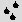

Geomorph - a height field editor for
Linux
Welcome
Release of version 0.50 (August the 1st, 2008)
Fixing a
crash related
to the continuous pen (March the 17th, 2007)
Release of
version
0.40 (February the 21st, 2007)
Older
news
Welcome
to the Geomorph
site
The Geomorph site gathers all guides and tutoriels written since the
0.11 release, in 2003.
If it's your first encounter with Geomorph, do not forget to read the introduction, which explains
among other
things
how are generated the height fields.
See also the guides and tutorials list in the documentation index.
And last but not least, do not miss the gallery!
Release of version
0.50 (August the 1st, 2008)
I'm glad to announce version 0.50
. Besides fixing
some bugs, it provides these improvements:
- A
new "Fourier Explorer" shows a 3D image of the Fourier transform of a
height field and allows to
finely control its frequencies. Read on to
know more.
I must give credit to Antonio Larrosa Jiménez to let kfourier available
for reuse, even if it does not work anymore with current systems. I
translated its FFT ("Fast Fourier Transform") program from C++ to C for
the core processing.
- A
new "Integrated interface" option is provided, if you don't like the
Gimp-style
multiple windows. Read
here how to set it in the geomorphrc
file. If you're installing Geomorph for
the first time, you don't have to worry, it's the default.
- The
installation script of the desktop icon has been made compliant to the
freedesktop.org
standard. It should now work with all recent
distributions.
- With the previous Gimp-style interface,
a new option allows to integrate the menu bar in each document window.
It can be set in the geomorphrc
file.
- A
new option in the geomorphrc
file controls the type of terrain displayed when creating a
new document. The default for a new install is now a "Subdivision 2"
terrain. If you prefer the older grey canvas (provided for
drawing hills and valleys), read
here how to set the default.
- The management of the default directories, which can be set
in the geomorphrc
file, has been revised.
- Geomorph
has been tested and adapted under Ubuntu 7.10 64 bits. Version 0.40 was
compilable without errors on x64 systems, but some features were not
working as expected.
- Many
small interface improvements have been implemented, like scrollable
windows in the option dialog and the removal of the "activate" button
in subdivision 2.
- The FAQ has
been completed with a question related to a situation where POV-Roy
does not work.
I also tried to improve the site by using CSS.
I
sincerely thanks Simon Donike again who, in addition to translating the
dialogs to german, found a lot of problems when testing the preliminary
0.50 version.
For the next versions, I hope to work on on import
/ export and scaling functions. There are required at the same time,
because Geomorph only processes square images, with a power of 2 size.
I would also like to add selection tools in the mask style and tools to
help the landscape design process. There could also be a surprise, if I
have enough spare time. And I will consider any suggestion which speaks
to me!
Fixing
a crash
related to the continuous pen (March the 17th, 2007)
With version 0.40, trying to modify the size scale or the level scale
in the continuous
pen  produces a crash
(segmentation
fault) on some systems. The bug was detected on an x64 system, but it
can happen on any system.
produces a crash
(segmentation
fault) on some systems. The bug was detected on an x64 system, but it
can happen on any system.
Until a new version is launched, it can be fixed by replacing
"draw_dialog.c" before
compiling the 0.40 package with this file:
http://geomorph.sourceforge.net/misc/draw_dialog.c
After downloading the file, open a console and copy it in your Geomorph
source tree:
cp
draw_dialog.c
~/geomorph-0.40/src/hf/draw_dialog.c
Best thanks to Sanne for submitting the bug and testing my solutions!
The 0.40
version is
here, finally! (February the 21st, 2007)
After more than one year, here is Geomorph
0.40, at last. It
provides some important new features, a lot of small improvements and
fixes, plus a richer documentation.
Here are the main new features:
Geomorph is not a program which can be used as
intuitively
as a word processor. Tutorials and guides are generally required. This
version
provides some new or updated documentation:

Finally, a lot of fixes and improvements have
been made,
including many when preparing the tutorials. Here are some of them :
- The rain erosion algorithm 
has been improved a lot.
Some explanations are given in the tools
index.
- Configuration scripts have been updated to allow
compilation
under x64 CPUs and some recent distributions (thanks to Andy Pfiffer).
- In the "wave" tool
 , the randomisation
parameter does
not create discontinuities anymore.
, the randomisation
parameter does
not create discontinuities anymore.
- The reliability of the automatic committing mechanism, when
switching between different dialogs or different windows, has been
improved.
- About the document window:
- the (x,y) position and the altitude under the mouse
cursor are
not always displayed in the top left corner, not only when a pen is
used;
- after a zoom in, the height field is now centered in the
window.
Messages and dialogs have been translated to German by Simon Donike,
like for the most recent versions.
See you later, during the next year, I hope!
Top
Contact:
Patrice
St-Gelais


 A tool for raising
the edges
of flat surfaces.
A tool for raising
the edges
of flat surfaces.